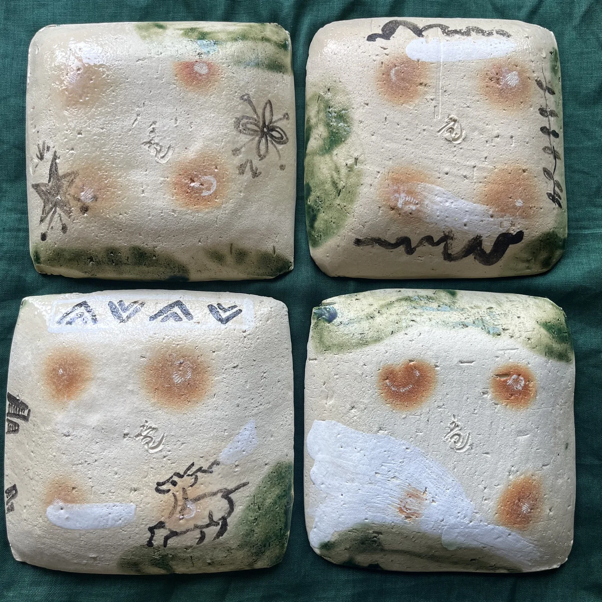

織部鉄絵四方皿
多治見の住吉窯にて作陶の機会を頂いた。温もりというか包容力のある器に仕上がった。

- Place
- 多治見・住吉窯
- Materials / Method
- 陶芸、鉄絵、織部釉
制作のテーマ
「〇〇に□□」という、2つのモティーフを掛け合わせること、必ず動物を入れることがテーマ。
1. 鳳凰鹿に笙
鳳凰繋がりの言葉遊びで、鳳凰笙と鳳凰鹿を合わせてみた。鳳凰鹿のデザインには生成AIを用いた。琳派の雲で天界を表そうとしたが、織部釉が薄すぎたのがやや不満。
2. 鶏に瓢箪
山暮らし時代を表現。隣の家で鶏飼ってたなあ。鶏のモティーフは古陶より。
3. 水車に蟷螂
古陶より。水車と水流は琳派でよくあるが、蟷螂が可愛かったので模倣。裏面の馬はまた別の古陶より。
4. 蟹に松葉
蟹の松葉焼や松葉蟹に因んだ言葉遊び。魯山人の蟹の皿に倣い大きく中央に配置した。
